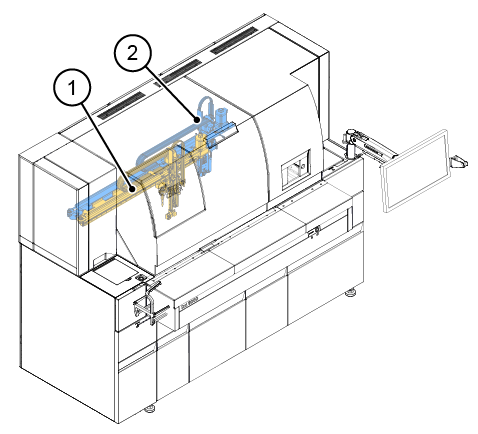
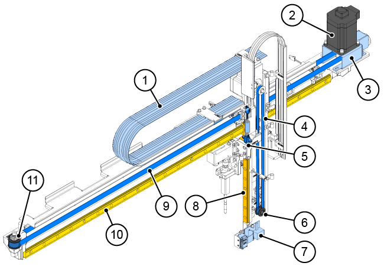
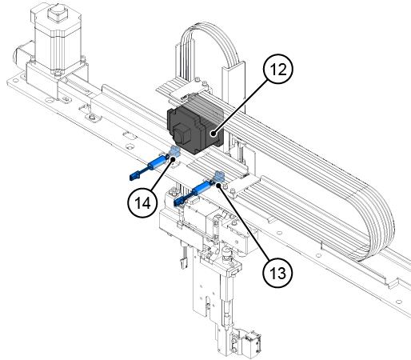
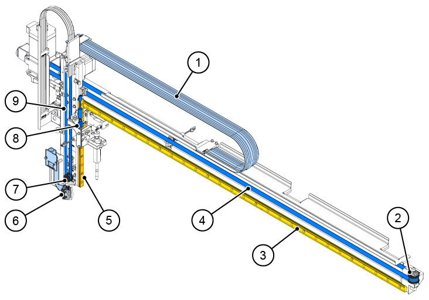
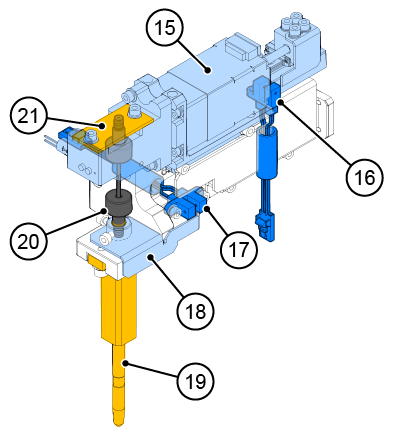

Operating Principles for the Sample Pipettors
This topic includes information about the theory of operation, or operating principles, for the aliquot and precision sample pipettor modules.
Function
The sample pipettors, when combined with a disposable pipettor tip, transport samples introduced via the sample presentation unit (SPU) or lab automation system (LAS).
The aliquot sample pipettor draws larger volume samples for dispensing into sample vessels (SVs), which are stored in the refrigerated sample wheel until they are transferred to the reagent shuttle for pipetting.
The precision sample pipettor draws smaller volumes for dispensing directly into reaction vessels (RVs), when only a small sample volume from the original sample container is available.
| Pipettor | Volume | Overdraw |
|---|---|---|
| Aliquot sample pipettor | N/A | 10% of aliquot |
| Precision sample pipettor | ≥25 uL | 5 uL |
| Precision sample pipettor | <25 uL | None |
Location
The sample pipettors are located on the left side of the instrument above the DispoTip and sample wheel modules.

| 1 |
Aliquot sample pipettor |
| 2 |
Precision sample pipettor |
Operational Overview - Aliquot Sample Pipettor
- Sample is presented at the SPU presentation tray or LAS aspiration point.
- Pipettor picks up a tip from the DispoTip stocker.
- Pipettor moves to aspiration position and level senses the sample container to verify sufficient volume.
- Pipettor aspirates required volume of sample for requested tests.
- Pipettor dispenses sample into one or more sample vessels stored in the sample wheel.
- Pipettor ejects disposable tip at the waste chute.
Operational Overview - Precision Sample Pipettor
- Sample is presented at the SPU presentation tray.
- Pipettor picks up a tip from the DispoTip stocker.
- Pipettor moves to aspiration position and level senses the sample container (or the reaction vessel in routine tests) to verify sufficient volume.
- Pipettor aspirates required volume of sample for requested test.
- Pipettor moves to reagent shuttle and dispenses sample into reaction vessel.
- Pipettor ejects disposable tip at the waste chute.
Level Sense at the Sample Presentation Unit (SPU)
-
Aliquot and precision sample pitpettors contain pressure sensors.
-
The pressure sensor detects fluctuations in pressure when the syringe tip (aliquot or precision) make contact with liquid.
-
The motion of syringe will be stopped once this pressure flucuation is detected by sensor.
-
Sensing is available once per cycle for the aliquot pipettor.
-
Sensing is available once per two cycles for the precision pipettor.
-
The exact details depend on the time chart.
Level Sense at the Reaction Vessel (RV)
-
The air refresh valve will open when the liquid level is detected.
-
The pressure in the tip and mandrel will be released and this will close the refresh valve.
-
The syringe (aliquot or precision) does not home and this will afftect the piston position. It will be different based on height of the liquid detected.
-
Once the air refresh valve is closed, the tip will aspirate below the liquid surface.
-
The volume aspirated depends on the assay.
Aliquot Sample Pipettor Component Locations and Functions
The following illustrations and tables describe the locations and functions of the aliquot sample pipettor components.

| Aliquot Sample Pipettor Components | ||
|---|---|---|
| # | Component | Description and Function |
| 1 | Flexible Cable | Cable that connects several sensors and motors to the DMCC PCB. |
| 2 | X-axis motor and encoder | Moves sample pipettor in X-axis (left to right) direction; detects X-axis movement to compare with motor step counts. |
| 3 | X-axis motor mount | Attaches to x-axis motor and sample pipettor gantry |
| 4 | Z-axis belt | Rotates as driven by the Z-axis motor. |
| 5 | Z-axis home sensor | Detects when the Z-axis carriage is at home position. |
| 6 | Z-axis idler pulley | Rotates as driven by the Z-axis motor; the carriage is attached to this. |
| 7 | Camera | Takes images of the aliquot sample pipettor tip for tip and fluid detection. |
| 8 | Z-axis linear slide | Linear slide which the carriage rides on. |
| 9 | X-axis belt | Rotates as driven by the X-axis motor. |
| 10 | X axis linear slide | Linear slide which the carriage rides on |
| 11 | X-axis idler pulley | Rotates as driven by the X-axis motor; the carriage is attached to this. |

| Aliquot Sample Pipettor Components | ||
|---|---|---|
| # | Component | Description and Function |
| 12 | Z-axis motor and encoder | Moves sample pipettor in Z-axis (up and down) direction; detects Z-axis movement to compare with motor step counts. |
| 13 | X-axis index sensor | Detects when the X-axis carriage is at index position. |
| 14 | X-axis home sensor | Detects when the X-axis carriage is at home position. |

| Aliquot Sample Pipettor Components | ||
|---|---|---|
| # | Component | Description and Function |
| 15 | Syringe assembly | Assembly used for aliquoting samples. Includes syringe, motor and drive components, home sensor, and pressure sensor PCB. |
| 16 | Pressure sensor PCB | PCB for pressure monitoring. |
| 17 | Tubing, syringe to mandrel | Air tubing connecting aliquot sample pipettor syringe assembly to the mandrel. |
| 18 | Mandrel | The end of the sample pipettor where the disposable tips attach. |
| 19 | Collision detection flag | Aliquot sample pipettor flag that triggers the aliquot collision sensor when the pipettor mandrel/tip has crashed, etc. |
| 20 | Collision sensor | Detects when the pipettor mandrel/tip has crashed into a physical obstruction (i.e. cap, another tip, misalignment). |
| 21 | Syringe home sensor | Detects when the syringe assembly is home in the x-direction |
Precision Sample Pipettor Component Locations and Functions
The following illustrations and tables describe the locations and functions of the precision sample pipettor components.

| Precision Sample Pipettor Components | ||
|---|---|---|
| # | Component | Description and Function |
| 1 | Flexible cable | Cable that connects several sensors and motors to the DMCC PCB |
| 2 | X-axis idler pulley | Rotates as driven by the X-axis motor; the carriage is attached to this |
| 3 | X-axis linear slide | Linear slide which the carriage rides on |
| 4 | X-axis belt | Rotates as driven by the X-axis motor. |
| 5 | Z-axis linear slide | Linear slide which the carriage rides on. |
| 6 | Camera | Takes images of the precision sample pipettor tip for tip and fluid detection. |
| 7 | Z-axis idler pulley | Rotates as driven by the Z-axis motor; the carriage is attached to this. |
| 8 | Z-axis home sensor | Detects when the Z-axis carriage is at home position. |
| 9 | Z-axis belt | Rotates as driven by the Z-axis motor. |

| Precision Sample Pipettor Components | ||
|---|---|---|
| # | Component | Description and Function |
| 10 | Z-axis motor and encoder | Moves sample pipettor in Z-axis (up and down) direction; detects Z-axis movement to compare with motor step counts. |
| 11 | X-axis motor and encoder | Detects when syringe pump is at home position; detects X-axis movement to compare with motor step counts. |
| 12 | X-axis motor mount | Attaches to x-axis motor and sample pipettor gantry |
| 13 | X-axis home sensor | Detects when the X-axis carriage is at home position. |
| 14 | X-axis index sensor | Detects when the X-axis carriage is at index position. |

| Precision Sample Pipettor Components | ||
|---|---|---|
| # | Component | Description and Function |
| 15 | Syringe assembly | Assembly used for precise sample pipetting. Includes syringe, motor and drive components, home sensor, and pressure sensor PCB. |
| 16 | Syringe home sensor | Detects when syringe pump is at home position. |
| 17 | Collision sensor | Detects when the pipettor mandrel/tip has crashed into a physical obstruction (i.e. cap, another tip, misalignment). |
| 18 | Collision detection flag | Precision sample pipettor flag that triggers the aliquot collision sensor when the pipettor mandrel/tip has crashed, etc. |
| 19 | Mandrel | The end of the sample pipettor where the disposable tips attach. |
| 20 | Tubing, syringe to mandrel | Air tubing connecting precision sample pipettor syringe assembly to the mandrel. |
| 21 | Pressure sensor PCB | PCB for pressure monitoring |
Component and Interaction Block Diagram
Interacting and Intersecting Devices
The sample pipettors interact with the following devices:
- DispoTip Stocker
- SPU Presentation Tray
- Lab Automation System (Aliquot Sample Pipettor Only)
- Sample Wheel (Aliquot Sample Pipettor Only)
- Reagent Shuttle (Precision Sample Pipettor Only)
- Solid Waste